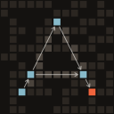
AtlasRelease 0.71.0
What changed in Atlas 0.71.0
Atlas 0.71.0 follows more of what your code says, where it says it: a path looked up in a table the code writes out, a folder it lists, a connection it hands on, a file it opens through options, a value a macro names. Python, Rust and TypeScript read each of these alike. On the page, a step counts the step that set its object up earlier in the route, and a value a function makes itself is its own, not a value from beyond. And atlas-code serve reads your code once, opens on the picture the agent reads, and reads again only when a file a reader asked about changes.
A path looked up in a table, a file listed in a folder
A client that looks its paths up in a table it writes out (PATHS[env], paths.get(key) of a HashMap::from([..]), an object literal in TypeScript) asked an address the code does not say in TypeScript and Rust, and met no route. Now a key no code decides is one of the values the table holds, and a key the code writes picks its own, as Python already read it: the client meets the routes at the paths its table holds, in all three languages. A folder's listing is D/* everywhere (fs::read_dir, readdirSync, os.listdir), and a for loop or a closure run on each element takes one of the elements. In Python, os.path.join, + and pathlib's / are the same path to every rule that asks.
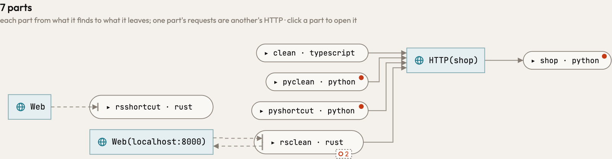
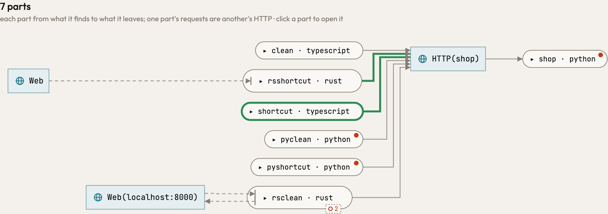
HTTP(shop) at the paths their tables holdA connection keeps the address it was opened at
A Rust server that binds its address in main and hands each connection to a function drew the web it talks to as Web, with no address. A connection is a door to the place it was opened at, and keeps that place wherever it is handed, as a path does: the greeter's answer and linger reach Web(127.0.0.1:7878), and a client that connects there reaches the same box, so the two ends of a connection meet. Python's sockets move data by the same operations as Rust's.
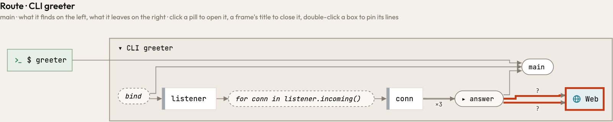
Web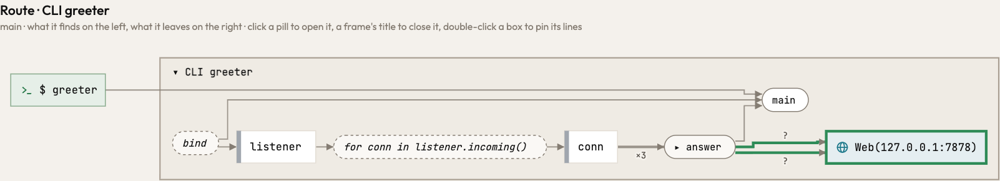
Web(127.0.0.1:7878), where its client arrives tooA file is where its open says
OpenOptions::new().append(true).open(folder.join("shelf.log")) was read as a call to create, the option, so the file was the literal shelf.log, wherever the folder was. Now the options say how the file opens and the file is the path open is handed, followed through the callers: the log rests beside the data files, as Python's open(.., "a") and TypeScript's appendFileSync put it. What the graph calls a file (atlas-code analyze, the MCP) is now its place, however the code spells it.
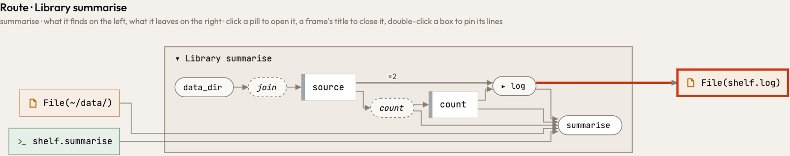
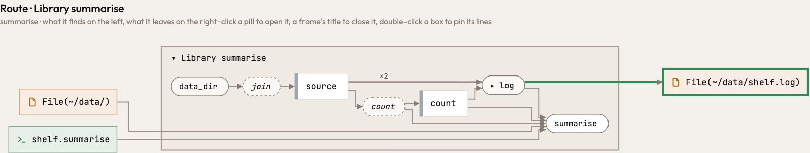
File(~/data/shelf.log), beside the data it countsA value a macro names is built
Outside a macro, Plain.show(&heading) builds a Plain and runs show on it. Inside one, println!("{}", Plain.name()) ran Plain.name on a Plain no step made. Now the two forms read alike: a Plain() step builds the value, and name runs on it.
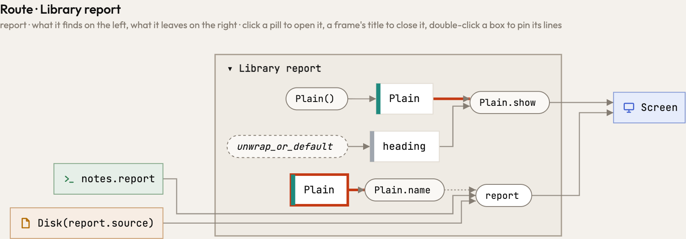
Plain.name runs on a value no step makes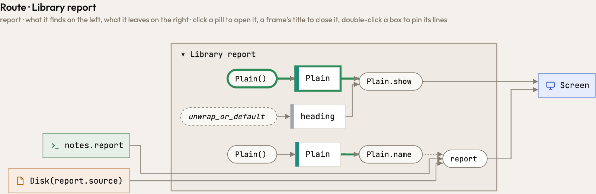
Plain() makes it firstA step counts what ran before it
A shelf is handed its folder when it is built, and each of its methods writes its own file there. When main set the shelf up in a step of its own, the page counted only callers above a step, not the step beside it, so both methods drew the path as it was read, Disk(write.path), and folded into one box. Now a caller that set the object up counts wherever it ran earlier in the route, and each method writes its own file. Who makes a path whole is also written in its shortest form: an alternative that contains another says nothing more.
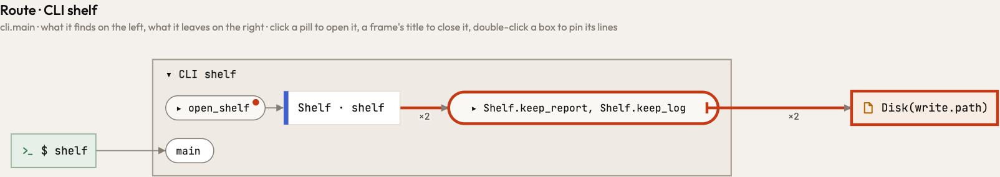
Disk(write.path) twice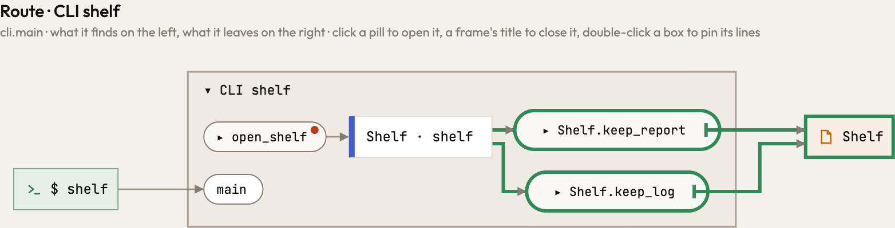
A function's own values are its own
A name a function binds to an expression, loud = samples.abs() > 0, was taken for a module's name, so the step that called it drew a value from beyond beside the samples it is made of. Now a local is the body's own value in every language, and only what a function really reads from outside comes from beyond. A step drawn closed beyond the cut names its values from beyond as its opened picture does, so opening it keeps every line.
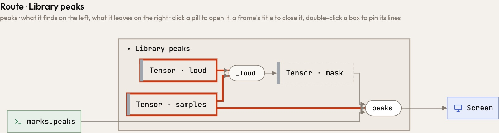
Tensor · loud → _loud beside Tensor · samples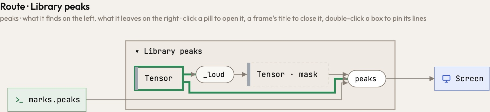
Tensor → _loud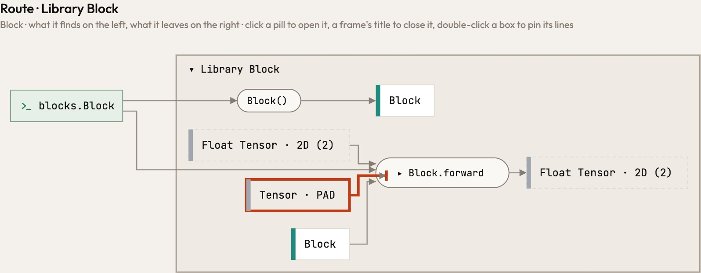
Tensor · PAD, opened only Tensor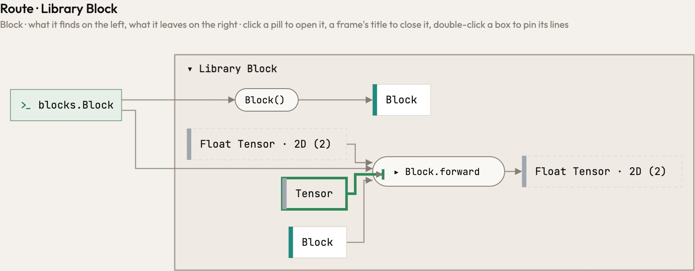
One reading, one picture for both sides
atlas-code serve, and Atlas Studio with it, read a program twice on a cold start: once without its libraries for a first picture, then again with them. That first picture was no coarser view of the complete one. Its routes ended at a library's border, where the complete picture follows the library to the place it reaches, so no zoom or filter leads from one to the other, and the agent beside you read the complete one. Now serve reads once, and the page opens on the picture the agent reads; after a change it keeps that picture until the next one is drawn. A part's reading is kept with what its reader asked of the repository, so a file no reader asks about (a picture, a note, a log) no longer makes Atlas read again or the page redraw.